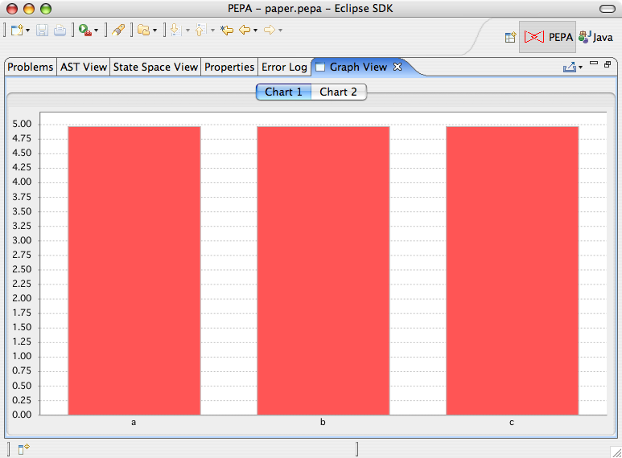

The Graph View is a tab-based view responsible for the management of all the graphs produced by the PEPA plugin. It is automatically opened when a new graph is requested. If you want to open it explicitely, select Window > Show View > Other... and then select PEPA > Graph View. The view support tools for editing graph properties such as background color, line thickness and legends. In addition, it provides a number of exporters to save the image to graphic formats such as PNG or serialise the data to file.
To edit the graph, right click it and select Properties.... To serialise the data, click the drop-down button in the toolbar menu of the view in the top-right corner of the view and select the desired format. A wizard will guide you through the process of setting exporter options and selecting target resources.